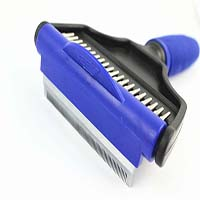

Desheddinator De-shedding Comb Brush
Desheddinator De-shedding Comb Brush
Description
The DeSheddinator (Medium 76 mm) pet grooming tool is perfect for pets weighing between 26 and 65lbs, however if you have more than one pet and a tight budget, the medium Desheddinator is sufficient to groom both large or small pets with short or long hair.
Choose the size you want. We offer 3 sizes- small, medium, and large. Pick the size depending on your pet.
The effectiveness edge of The Desheddinator reduces up to 95% shedding. The results last long, requiring use of the tool just once or twice a week AND NOT DAILY!! Use the brush for a shiny well groomed look, making your pet handsome, healthy and happy. Let your pet be the best looking in the neighbourhood. And you become the awesome pet owner who cares.
Vet approved and pain free grooming tool and comes with egonomically designed easy grip re - enforced +TPR ABS+ handle.
In Stock
Price $50.00
Customer Reviews
i am very happy with my purchase. The quality of the brush is wonderful. I have a long hair doxie that requires daily grooming, and the 2 in 1 Comb rake combo is ideal for the dog. The brush is gentle yet tough enough to get right through my pet's hair. What I've noticed is there is much less sheeding and Max (my dog) really is cooperative at brushing- something I have had trouble with in the past.
For pet owners that like to pamper and care for their dogs, I highly recommend this brush.